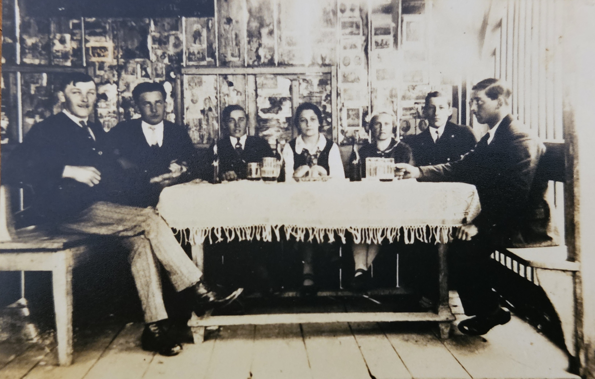

Ein historisches Foto aus Vorchdorf. Stille Gesichter, eingefrorene Momente. Doch was passiert, wenn wir einer KI sagen: „Lass dieses Bild erwachen“?

Dieses Video wurde mit einer einzigen Anweisung an die KI Grok erzeugt: „Lass dieses Bild erwachen und die Personen angeregte Gespräche führen.“
Die KI analysiert das Foto, erkennt Gesichter, Körperhaltungen und den Raum – und erzeugt daraus ein Video mit natürlich wirkenden Bewegungen und Mimik. Das Original wird dabei nicht verändert.
Grok (xAI) Video-Generierung Bildanalyse Motion Synthesis